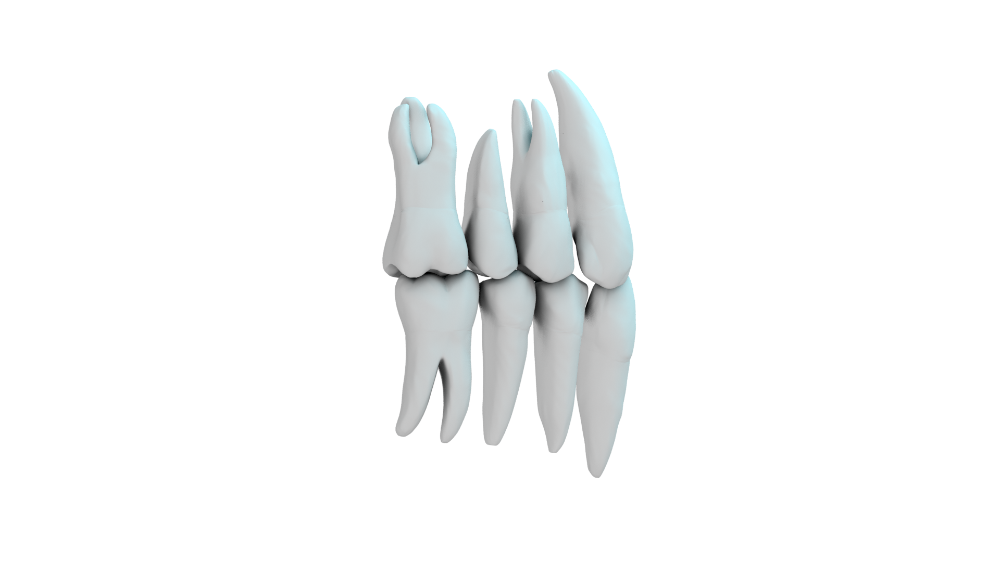
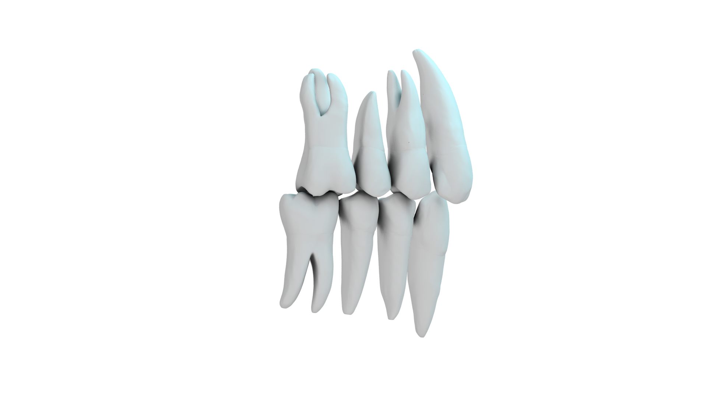
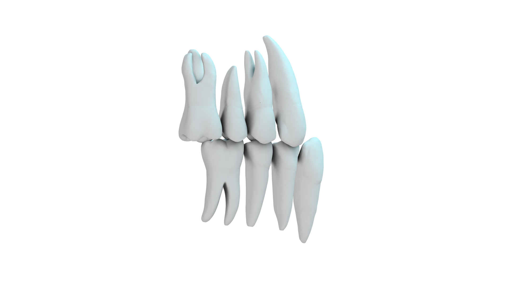
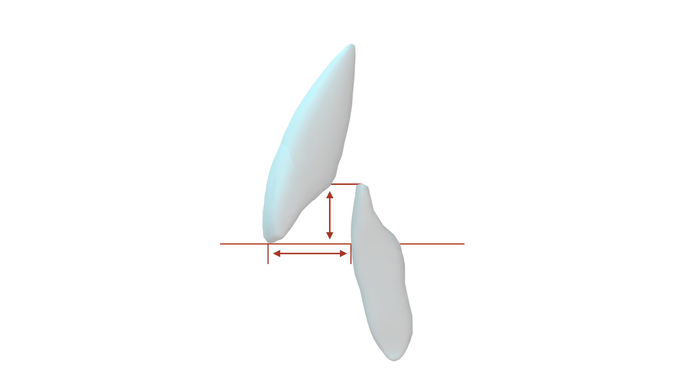
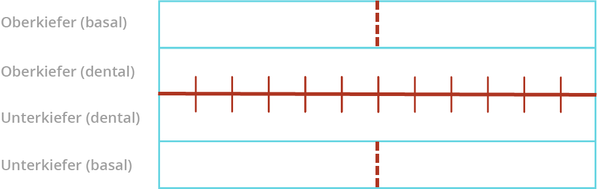

Die intermaxillären Befunde beschreiben die Zuordnung der unteren Zahnreihe zur oberen getrennt in den drei Raumebenen.
Bestimmt wird die Okklusion am gesockelten Modell, welches in der habituellen Okklusion registriert wurde.
Eine grobe Klassifikation in der Sagittalen erfolgt traditionsgemäß entsprechend dem Schema nach ANGLE, wobei nur die Position der ersten Molaren zueinander aus-schlaggebend ist:
Diese entspricht einer Neutralokklusion (NO). Dabei okkludiert die mesiobukkale Furche des unteren ersten Molaren mit dem mesiobukkalen Höcker des oberen ersten Molaren.

Diese entspricht einer Distalokklusion (DO). Hier okkludiert die mesiobukkale Furche des unteren ersten Molaren distal des mesiobukkalen Höcker des oberen ersten Molaren.

Bei dieser Mesialokklusion (MO) okkludiert die mesiobukkale Furche des unteren ersten Molaren mesial des mesiobukkalen Höckers des oberen ersten Molaren.

Zusätzlich wird die Zuordnung der Eckzähne beurteilt.
Eine Quantifizierung der Okklusionsabweichungen wird in Prämolarenbreiten (Pb) vorgenommen. Es sollen hier Abweichungen in ¼, ½, ¾, 1 etc. angegeben werden. (Jeweils das Vielfache von ¼). Beträgt die Abweichung ½ Pb, so besteht singulärer Antagonismus.
Die erhaltenen Werte, z.B. ½ Pb DO, werden in die erste Zeile (sagittal) in das Schema eingetragen.
| Rechts | Links | |
|---|---|---|
| Sagittal | ||
| Vertikal | ||
| Transversal |
| Rechts | Links | |
|---|---|---|
| Sagittal | ||
| Vertikal | ||
| Transversal |
| Rechts | Links | |
|---|---|---|
| Sagittal | ||
| Vertikal | ||
| Transversal |
Zur Beschreibung der sagittalen Okklusion gehört zusätzlich noch eine Angabe über die sagittale Frontzahnrelation. Die sagittale Stufe (Overjet) wird gemessen als Dis-tanz zwischen der labialen Fläche des zentralen oder lateralen Schneidezahns des Unterkiefers und der Schneidekante des zentralen oder lateralen Schneidezahnes des Oberkiefers. Liegt eine umgekehrte sagittale Stufe vor, werden die Messwerte als negativ angegeben.

| Saggitale Stufe |
| Vertikale Stufe |
Beim transversalen Okklusionsbefund werden Kopf-, Kreuz- und Scherenbisse registriert.
| Transversaler Kopfbiss: | Höcker-Höcker Beziehung in der Frontalebene: einfacher oder doppelter Höckerbiss |
| Seitlicher Kreuzbiss: | Die bukkalen Höcker der oberen Seitenzähne greifen in die Längsfissur der unteren Seitenzähne |
| Seitlicher Scherenbiss: | Bukkalokklusion der oberen und unteren Seitenzähne |
Die transversalen Okklusionsabweichungen werden in der dritten Zeile des oben aufgeführten Schemas eingetragen.

Abweichungen in der Übereinstimmung der dentalen Mittellinien von Oberkiefer und Unterkiefer können ganz unterschiedliche Ursachen haben. In einigen Fällen ist die Mittenabweichung mit einer insgesamt asymmetrischen Okklusion im Seitenzahnbereich verknüpft und damit ein wichtiges diagnostisches Kriterium. Als mögliche Ursachen müssen vor allem differenziert werden:
Eine skelettale Asymmetrie der Maxilla ist relativ selten (Patienten mit LKG-Spalten!) Zu beachten ist dabei zudem, dass skelettale Abweichungen und dentale gegenläu-fig ausgeprägt sein können. Insbesondere in komplexen Fällen ist die Mittenabweichung im Rahmen einer isolier-ten Modelldiagnostik nicht immer sicher zu differenzieren. Günstiger ist es, bei der klinischen Untersuchung des Patienten festzustellen, ob einerseits das Kinn und/oder andererseits die dentalen Mitten von Ober- und/oder Unterkiefer von einer gedachten Symmetrielinie des Gesichtes (Mitte der Bipupillarlinie, Nasenspitze, Philtrum, Unter-lippenmitte, Kinnspitze) abweichen. Für eine orientierende Differentialdiagnostik anhand der zur Verfügung stehenden Unterlagen können jedoch die folgenden Hinweise verwendet werden.
Im Oberkiefer wird die Verlängerung der Raphe palatina mediana nach anterior beurteilt. Sie wird mit Bleistift anterior im Bereich des 2. Gaumenfaltenpaares und posterior möglichst weit distal, meist im Bereich vom M1, mit je einem Punkt markiert. Mit der Schmuth-Messplatte können etwaige Abweichungen ermittelt werden. Die Papilla incisiva wandert häufig bei Oberkieferfrontmittenabweichungen mit und dient daher nicht zur Beurteilung. Im Unterkiefer könnte zur Diagnostik prinzipiell die Spina mentalis dienen. Da sie röntgenologisch nur auf einer Aufbissaufnahme erkennbar ist, wird in der Regel darauf verzichtet.
Jedoch kann man auf klinische Hinweise achten, die eine Wanderung der Schneide-zähne zu einer Seite überhaupt ermöglicht haben könnten. Hier ist besonders ein asymmetrischer Verlust der Milcheckzähne zu nennen. Auch im OPG kann eine ge-kippte Achsenstellung der Frontzähne ein Hinweis auf eine Wanderung sein.
Bei ausgeprägten skelettalen Mittenabweichungen kann eine Beurteilung der enface-Aufnahme hilfreich sein. Auch bei allen deutlichen Asymmetrien der Okklusion auf der rechten und auf der linken Seite, die nicht auf offensichtliche Aufwanderungen einzelner Molaren zurückgeführt werden können, liegt der Verdacht auf eine skeletta-le Ursache nahe. Ohne die klinische Funktionsuntersuchung ist eine Unterscheidung zwischen einer strukturellen Asymmetrie der Mandibula und einer funktionellen La-terognathie mit den zur Verfügung gestellten Unterlagen nicht möglich. In komplexen Fällen und bei erwachsenen Patienten zur Vorbereitung einer Dysgna-thie-Operation wird eine Schädel p.a. - Röntgenaufnahme angefertigt. Nicht nur Lokalisation und Richtung einer Mittellinienabweichung sind wichtig, son-dern auch das Ausmaß muss angegeben werden. Die entsprechenden Werte wer-den in das oben angegebene Schema eingetragen.